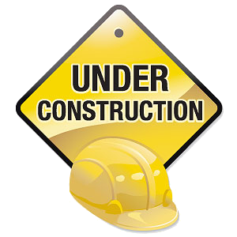

Michael J. Kelsey
Full Sail University
Advance Visual Frameworks
AVF0612

The PhoneGap chart illustrates the supported features. The features include accelerometer, camera, compass, contacts, file, geolocation, media, network, notifications, and storage.
For the application I am currently working on, "Beer Lager", I would like to implement many of these features. I would like to have the ability to access the camera to take a picture of the beer. Geolocation could be used to have it record where the beer was obtained. Contacts and notifications could be used to send a recommended beer to a friend, and the app will notify you when a friend as sent you a beer.
In the past I tend to go over board. I have an idea of what I want the app to look like in my head and the way it will work. The problem is my current knowledge and skill is not good enough to accomplish. I tend to waste a lot of time trying to "shoot for the stars".
I hope to finalize the design of the Beer Lager app in AVF. I would like both apps to have some uniqueness to the application that seperates it from other apps.
See Above
Since my CRUD app is about logging in beer, I would make sure that the app is accessible to those that are drunk. One way to accomplish this would be to make sure buttons are spaced far apart so a user would no accidentally click on something when motor skills have been impaired.
First let me point out, the firs thing these screen reader companies need is better demos. That being said, it is hard for me to really imagine being blind and not being able to see what is on the screen. As a developer I could make sure that my applications interface with those screen readers. Not only will this increase my audience of users to those perhaps my competition has not considered, but I will have made someone's life that much easier.